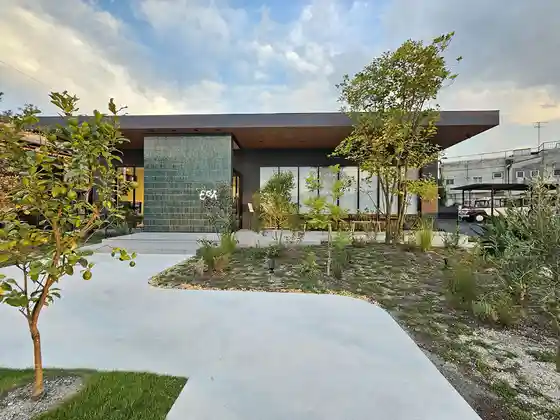
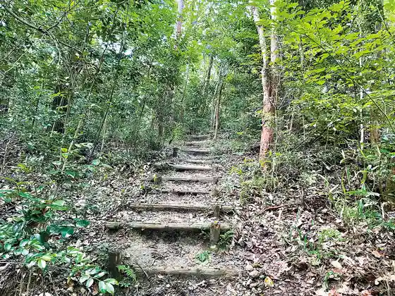
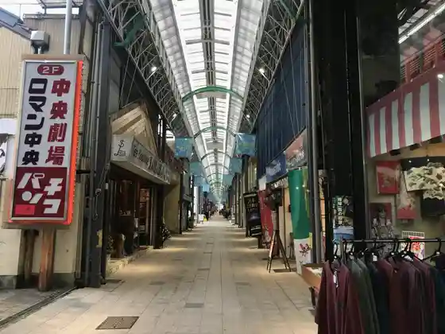
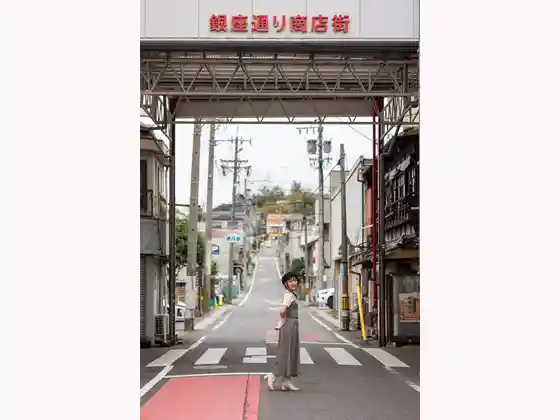

Uddodezain Park Seto
Seto, Aichi · 090-3736-3685 · Official / source link
STUDIO 894
Seto, Aichi · 0561-84-0894 · Official / source link

Aichi Kaijo no Mori Center
Seto, Aichi · 0561-86-0606 · Official / source link

Seto Suehiro Town Shopping Street
Seto, Aichi · 0561-83-6064 · Official / source link

Ginzadori Ri Shopping Street
Seto, Aichi · Official / source link

Seto Kawazoi Setomo no Senmontengai (Chuo Tori Shopping Street)
Seto, Aichi · 0561-82-5359 · Official / source link
Shinseiki Kogei Kan
Seto, Aichi · 0561-97-1001 · Official / source link
Seto Sometsuke Kogei Kan
Seto, Aichi · Official / source link
no Berutei Kodomo Sozo Kan / no Berutei Museum
Seto, Aichi · 0561-88-2668 · Official / source link
Roadside Station (Seto Shina no)
Seto, Aichi · 0561-41-3900 · Official / source link
Tei Mitsudera Tei Mitsudera Park
Seto, Aichi · 0561-85-2730 · Official / source link
Fukagawa Shrine
Seto, Aichi · 0561-82-2764 · Official / source link
Aichi Kogen Kokutei Park Iwaya Do Park
Seto, Aichi · 0561-85-2730 · Official / source link
Kama Kaki no Komichi
Seto, Aichi · 0561-85-2730 · Official / source link
Manekineko Museum
Seto, Aichi · 0561-21-0345 · Official / source link
Aichiken Toji Art Museum
Seto, Aichi · 0561-84-7474 · Official / source link
Seto Kura Museum Seto Kura Seramikku Plaza
Seto, Aichi · 0561-97-1190 · Official / source link